Ce document décrit les étapes à suivre et les fichiers nécessaires pour créer un disque de taille 20 Mo pour la programmation HYPERCARD sous System 7.1 français
dd if=/dev/zero of=HD32Hypercard.dsk count=40960
La stack ddSyntax permet d'obtenir la ligne de commande à lancer dans le Terminal sous MacOS :
dd if=/dev/zero of=HD32Hypercard.dsk count=40960
Le fichier obtenu doit être initialisé. C'est réalisé à la première ouverture du .dsk dans minivMac.
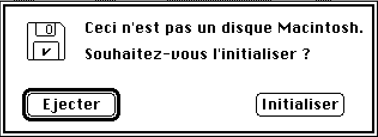 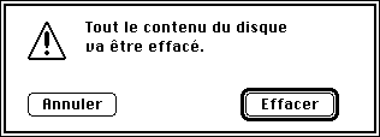 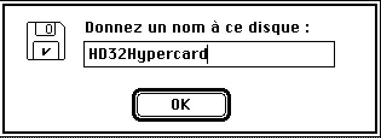
Quitter minivMac s'il est lancé.
Aller dans le dossier /Installers/7.1FR
Démarrer minivMac avec le disque "Install 1.img"
Arrivé sur cet écran, faire glisser le disque préparé en 1 sur minivMac. Il ne se passe rien visuellement mais le disque a été monté et sera proposé sur l'écran suivant.
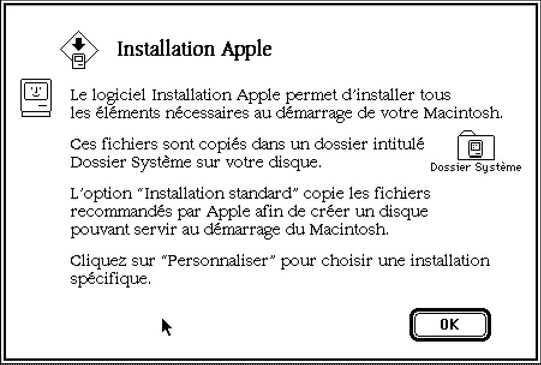
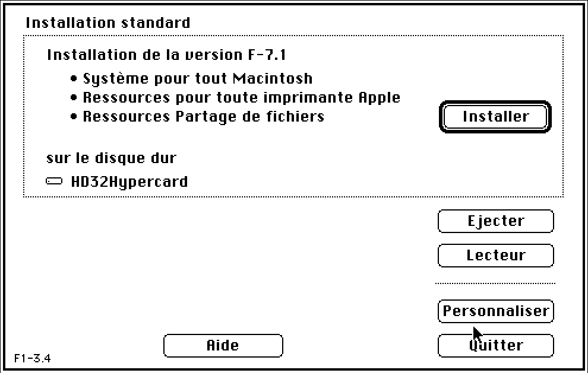
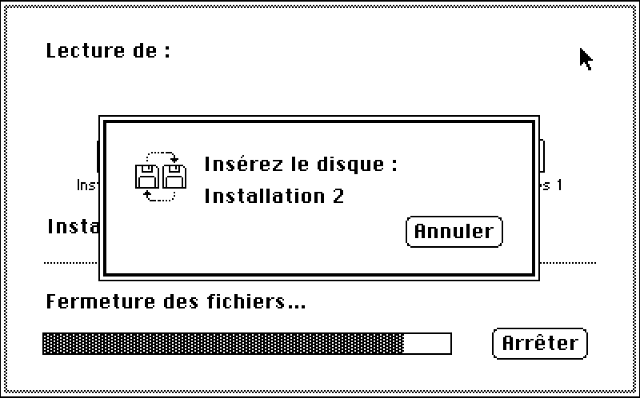
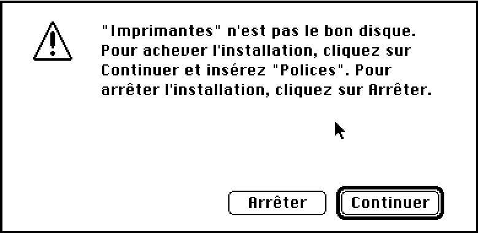
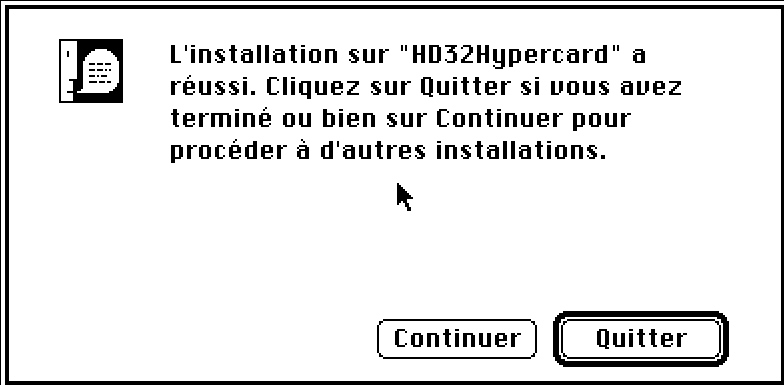
Cette installation requiert 3000 Ko de RAM, c'est normalement le cas à ce stade de l'installation. On utilisera les fichiers suivants :
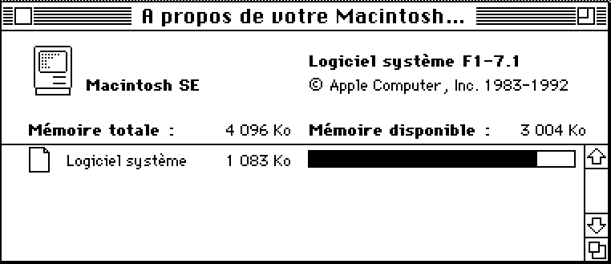
ATTENTION, ne pas utiliser l'installeur proposé sur l'écran initial.
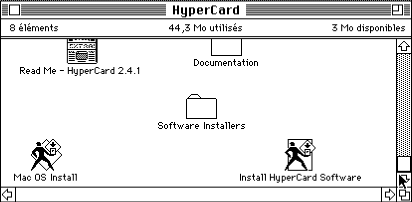
Aller dans le dossier "Software Installers", puis dans "Hypercard Installer" et cliquer sur "Installer"
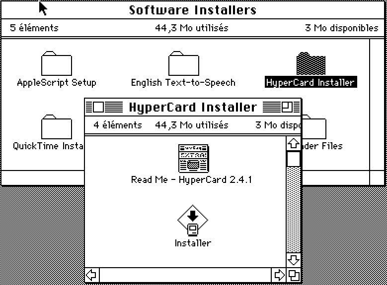
Les deux autres fichiers s'installent par simple copie :
Ils sont facultatifs mais vivement conseillés.
Pour cette installation, utilisez le disque "MinivMac.dsk" :
Cette installation se réalise avec les disquettes :
Il est requis de démarrer miniVmac sans charger les extensions (touche SHIFT enfoncée au démarrage).
Liste des modules nécessaires.